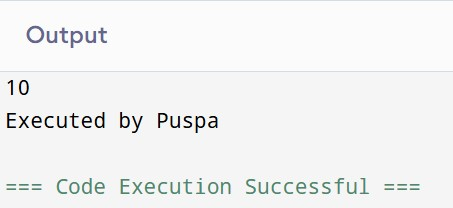
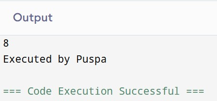
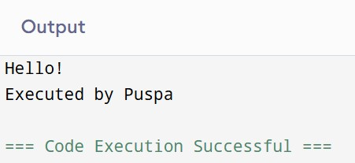
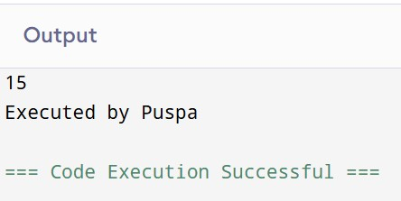
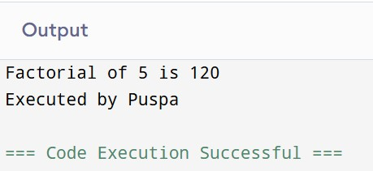
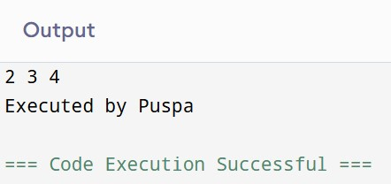

1. Working with a Function
a. Define Function
A function is a self-contained block of code designed to perform a specific task. Functions help improve modularity and code reusability. Once a function is defined, it can be called multiple times from different parts of a program.
b. Syntax of Functions
The basic syntax of a function includes its return type, name, optional parameters, and body.
Example:int add(int a, int b) {
return a + b;
}c. Types of Functions
- Library Functions: These are built-in functions provided by programming languages. They perform standard operations like input/output, math computations, string operations, and more. Examples include
printf(),scanf(),sqrt(), andstrlen(). - User-Defined Functions: These are custom functions created by the programmer to perform specific tasks. They help make the code modular, reusable, and easier to maintain. For example, a user-defined function
int add(int a, int b)can be written to return the sum of two numbers.
d. Components of a Function
- Function Prototype: A declaration that informs the compiler about the function’s name, return type, and parameters before it is defined. It appears at the beginning of the program.
- Function Call: The point where the function is actually invoked or executed in the program. It sends control to the function definition and may return a result.
- Function Definition: This is the actual body of the function where the logic is written. It contains a header and a block of code that performs the operation.
- Return Type: It specifies the type of data the function returns to the caller, such as
int,float,char, orvoid(if nothing is returned).
Example:
int add(int, int);
Example:
sum = add(4, 5);
Example:
int add(int a, int b) {
return a + b;
}
2. Categories of Functions with Example
a. Function with Return Type but No Arguments:
This type of function is designed to perform a specific task and return a result, but it does not require any input from the user or program when called. It is useful when all the necessary data for computation is already available within the function itself. Such functions are often used for returning fixed values or reading internal states. For example, a function that returns a constant or the result of a calculation that doesn't depend on external input.
Example:#include <stdio.h>
int getNumber() {
return 10;
}
int main() {
int num = getNumber();
printf("%d", num);
printf("\nExecuted by Puspa");
return 0;
}

b. Function with Return Type with Arguments:
This function accepts one or more input parameters and returns a value based on those inputs. It allows passing external data into the function, processing it internally, and then sending the result back to the calling environment. These types of functions are useful for tasks such as performing mathematical calculations or evaluating conditions. Since they use arguments, the result can vary depending on the inputs provided.
Example:#include <stdio.h>
int add(int a, int b) {
return a + b;
}
int main() {
int sum = add(5, 3);
printf("%d", sum);
printf("\nExecuted by Puspa");
return 0;
}

c. Function with No Return Type and No Arguments
This type of function neither takes arguments nor returns any value. It is typically used when the function performs an action like displaying a message or modifying a global variable. These functions rely solely on internal logic and are suitable for simple tasks that don't require input or produce output to the calling program.
Example:#include <stdio.h>
void greet() {
printf("Hello!");
}
int main() {
greet();
printf("\nExecuted by Puspa");
return 0;
}

d. Function with No Return Type but With Arguments
This function accepts arguments but does not return any value. It is useful when you need to pass data into the function for processing or display, but the function does not need to send any result back. These are often used for displaying data, updating global variables, or logging events.
Example:#include <stdio.h>
void printSum(int x, int y) {
printf("%d", x + y);
}
int main() {
printSum(7, 8);
printf("\nExecuted by Puspa");
return 0;
}

3. Storage Classes
Storage classes in C define the scope, lifetime, visibility, and default initial value of variables. They determine how memory is allocated, where the variable is stored, and how long it persists in memory during the program's execution. A storage class also specifies whether the variable is accessible within a specific block or throughout the program. Each variable in C is associated with one of the storage classes, which helps the compiler manage memory and performance optimally. Understanding storage classes is essential for writing efficient and maintainable C programs. In C, storage classes are categorized into four types:
-
Automatic Storage Class: This is the default storage class for local variables in C. Variables declared inside functions without a storage class keyword are considered `auto`. They are created when the function or block is entered and destroyed when it exits. These variables are not initialized automatically and may contain garbage values if not explicitly initialized. They are stored in the stack memory.
-
External Storage Class: This is used to declare a global variable that is defined in another file or later in the same file. It allows different source files to share the same global variable. `extern` variables are stored in memory throughout the program execution and are initialized to zero by default.
-
Register Storage Class: The register storage class is used to suggest that the compiler store the variable in a processor register instead of RAM to make access faster. This is especially useful for frequently accessed variables like loop counters. Register variables have automatic storage duration, meaning they are created when the function or block is entered and destroyed upon exit. However, they do not have a default value and hold garbage data if not explicitly initialized. One important limitation is that you cannot access the memory address of a register variable using the address-of (&) operator.
-
Static Storage Class: The static storage class is used to retain the value of a variable between function calls. Unlike automatic variables which are re-initialized each time a function is called, static variables are initialized only once and maintain their value even after the function ends. This makes them ideal for counting or preserving state across multiple function calls. A static variable also has internal linkage, meaning it is not visible outside the file if declared globally. By default, static variables are initialized to zero if no value is assigned explicitly.
4. Recursive Function
A recursive function is a function that calls itself to solve a problem by breaking it down into smaller sub-problems of the same type. Recursion is particularly useful for tasks that can be divided into similar subtasks, such as calculating factorial, Fibonacci numbers, or traversing data structures like trees. Every recursive function must have at least one base case to stop the recursion and avoid infinite loops. The function repeatedly calls itself with a modified input that gets closer to the base case. Once the base case is reached, the function begins to return values, unwinding the recursive calls one by one. Recursive solutions are elegant but can be memory-intensive due to the use of call stacks.
Example:#include <stdio.h>
int factorial(int n) {
if (n <= 1)
return 1;
else
return n * factorial(n - 1);
}
int main() {
int num = 5;
int result = factorial(num);
printf("Factorial of %d is %d", num, result);
printf("\nExecuted by Puspa");
return 0;
}

5. Passing Array to a Function
In C, when you pass an array to a function, only the address of its first element is sent. This means the function can directly access and modify the original array without making a copy. By default, arrays are passed this way, which is efficient for memory and speed. Sometimes, the size of the array is also passed as a separate argument so the function knows how many elements to process. Although you can specify the size in the function parameter, it doesn’t change how the array is passed internally. This allows flexible and efficient manipulation of arrays inside functions.
Example:#include <stdio.h>
void incrementArray(int arr[], int size) {
for (int i = 0; i < size; i++) {
arr[i] = arr[i] + 1;
}
}
int main() {
int numbers[] = {1, 2, 3};
incrementArray(numbers, 3);
for (int i = 0; i < 3; i++) {
printf("%d ", numbers[i]);
}
printf("\nExecuted by Puspa");
return 0;
}
